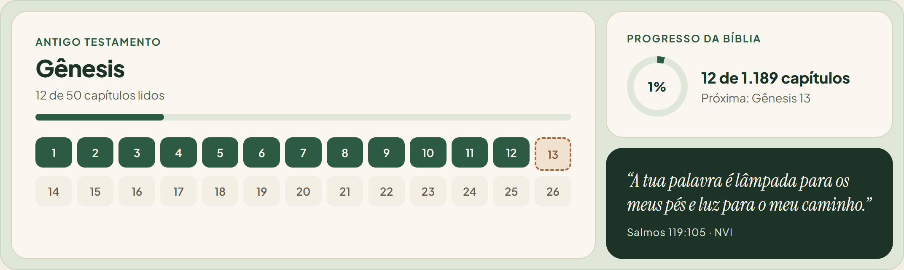

Caminhe pela Bíblia, um capítulo de cada vez.
Registre cada capítulo que você lê e acompanhe, com calma, a sua jornada de Gênesis a Apocalipse.
“Lâmpada para os meus pés” · Salmos 119:105

COMO FUNCIONA
Três passos para começar
Crie sua conta
Um cadastro simples, com nome, e-mail e senha. Seu progresso fica guardado na sua conta.
Marque o que leu
Escolha o livro e toque em cada capítulo concluído. Marcou errado? Toque de novo para desfazer.
Acompanhe o caminho
Veja quanto já percorreu, quais livros concluiu e qual é a próxima leitura.
POR DENTRO DA TRILHA
Tudo o que você leu, num só lugar
Cada livro mostra os capítulos lidos, os que faltam e onde continuar. No Progresso, você vê a Bíblia inteira de uma vez: Antigo e Novo Testamento, livros concluídos e o ritmo da semana.
Entender como o site funciona →12
capítulos lidos
Gn 13
próxima leitura
Antigo e Novo Testamento
FUNCIONALIDADES
Feito para ajudar você a não perder o caminho
Marcação por capítulo
Os 66 livros com todos os capítulos. Um toque marca como lido; outro toque desfaz.
Próxima leitura
O site indica sempre o primeiro capítulo ainda não lido, na ordem da Bíblia.
Progresso detalhado
Porcentagem da Bíblia, Antigo e Novo Testamento e os livros já concluídos.
Sequência de leitura
Quantos dias seguidos você leu e quantos capítulos leu em cada um dos últimos 7 dias.
Perfil personalizado
Escolha um dos 10 avatares bíblicos ou use a sua própria foto.
Progresso salvo
Seus dados e seu progresso ficam armazenados com segurança no banco de dados, permitindo que você retome suas atividades de onde parou.
QUEM FEZ ESTE PROJETO
Olá, eu sou Adrian
Conheça a pessoa por trás deste projeto e por que este tema foi escolhido.
Sua trilha começa no próximo capítulo.
Comece por Gênesis ou pelo livro que você já está lendo. O site guarda o resto.